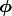
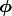
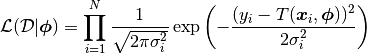
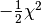
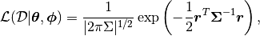
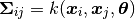
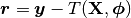
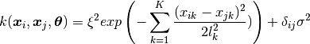
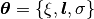

GPs in a nutshell¶
A Gaussian Process (GP) is a non-parametric method for regression, used extensively for regression and classification problems in the machine learning community. Please refer to the papers and textbooks mentioned in the Overview for a full introduction to GPs.
A GP is formally defined as an collection of random variables  , any finite number of
which have a joint Gaussian distribution, e.g.:
, any finite number of
which have a joint Gaussian distribution, e.g.:

Generally speaking, when we fit a model  or mean function with parameters  to
data
or mean function with parameters  to
data  and , collectively refered to as the data,
and , collectively refered to as the data,  , we construct
a likelihood function under the assumption of independent Gaussian uncertainties,
, we construct
a likelihood function under the assumption of independent Gaussian uncertainties,  :
:

This likelihood is central to inferring the probabilty distributions of our parameters .
We can optimise it with respect to , or construct a posterior distribution for
via Bayes theorem after defining priors. Note that the term inside the exponential is ,
so optimising the likelihood is equivalent to minimising  if the uncertainties are held
fixed. This is already a Gaussian process, albeit a trivial one.
if the uncertainties are held
fixed. This is already a Gaussian process, albeit a trivial one.
More generally, we can use a multi-variate Gaussian distribution as our likelihood, where we consider covariance between the data points:

where in addition to a mean function we define a kernel function to populate the covariance matrix:

and have defined . The most commonly used kernel, and the default in this code, is the squared exponential kernel:

where . Here  represents the height scale,
is the vector of length scales (one for each input dimension of
), and
represents the height scale,
is the vector of length scales (one for each input dimension of
), and  is the white noise term.
is the white noise term.
This kernel states that data points near each other in input space are highly correlated, and those far away from each other are poorly correlated, so we can learn a lot about our underlying function space near observed data points. The squared exponential kernel defines an infinitely smooth function space.
Note
The parameters of both the kernel and the mean function are now referred to as hyperparameters of the model.
This likelihood function can be treated in exactly the same way as the previous one, ie. you can optimise with respect to all of the hyperparameters, marginalise over it, etc. This documentation will provide examples of how to do this with GeePea. Now lets get started with a simple example.